Si las componentes de un vector son función de un escalar u:
r = r(u)
e incrementamos u, pasando su valor a u + ∆u, hallaremos el valor del incremento en el vector, ∆r(u), de la forma:
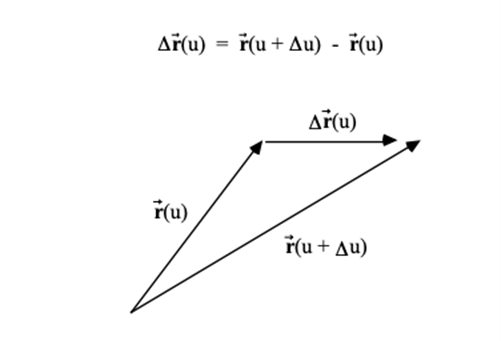
Si dividimos el vector ∆r por ∆u y pasamos al límite con ∆u tendiendo a cero, obtenemos la derivada de r con respecto al escalar u:
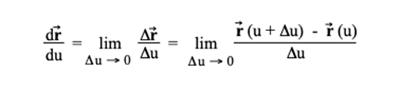
Si las componentes cartesianas del vector r(u) son:
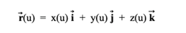
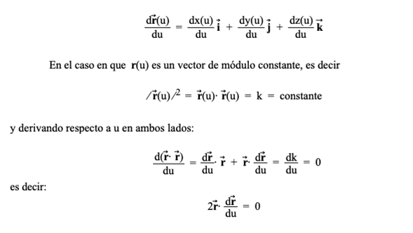
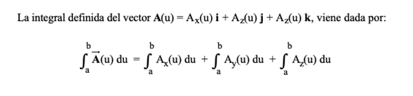
Sea V(x,y,z) una función escalar definida y derivable en cada uno de los puntos (x,y,z) de una cierta región del espacio (V define un campo escalar derivable). El gradiente de V, representado por ∇V o grad V, viene dado por un vector que, en coordenadas cartesianas es
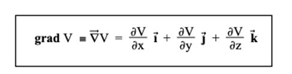Obsérvese que grad V define un campo vectorial.
En el caso de tener un punto en coordenadas cartesianas calculamos la derivada parcial respecto a x, mediante la operación de derivación considerando que sólo x es variable y que las otras variables son constantes. Así si tenemos una función F (x,y,z):
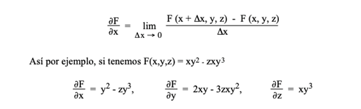
El grad V es un vector que índica como varía V en las proximidades de un punto, el sentido es de máximo crecimiento de la función.
Matemáticamente, la diferencial de una función V(x,y,z) viene dada por:
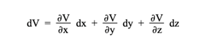
dV representa la variación entre dos puntos muy próximos (x,y,z) y (x + dx, y + dy, z + dz). Teniendo en cuenta la definición de gradiente:
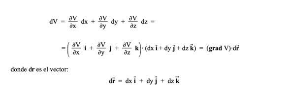
es el vector que une los puntos antes señalados. Asi pues, nos queda que dV puede expresarse en términos del vector gradiente como el producto escalar de los vectores grad V y dr:
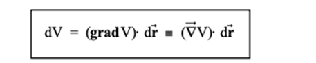
determinando esta ecuación la variación dV de la función escalar V a lo largo de la dirección dr. De la ecuación anterior se tiene:
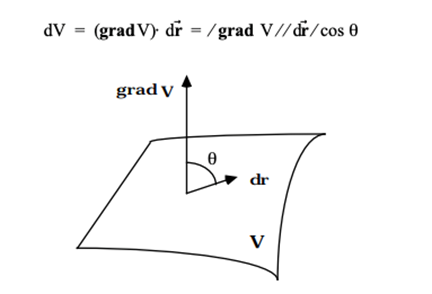
deducimos que, para que exista una máxima variación del campo, para un valor fijo |dr| , el coseno del ángulo formado por dr y grad V, debe ser 1 y el ángulo que forman dichos vectores, nulo:
"El gradiente tiene la dirección de la máxima variación del campo y va en el sentido de los valores creciente de V".
Sabemos que en las superficies equiescalares se verifica que:
V(x,y,z) = constante
luego, es evidente que en una superficie equiescalar el campo escalar V no cambia y por tanto se verificará:
dV = 0
es decir dV = (grad V).dr = 0, luego, el gradiente de la función escalar V es perpendicular a las superficies equiescalares en el punto considerado.
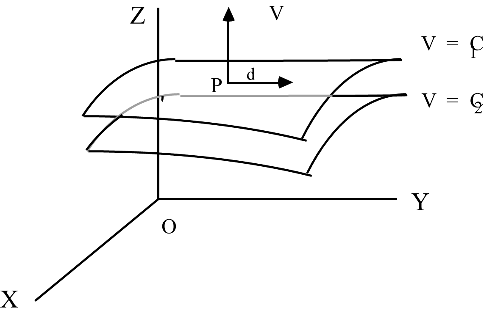
La componente del gradiente ∇V en la dirección de un vector unitario uN es igual al producto escalar (∇V).uN y se llama derivada direccional de V en la dirección del vector uN:
Para una superficie S, determinada por la ecuación f(x,y,z) = 0, el vector unitario normal
en un punto (x,y,z) viene dado por:
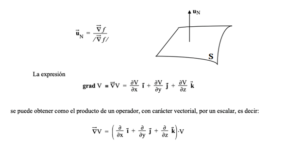
el término incluido dentro del paréntesis recibe el nombre de "operador nabla", dándosele la notación ∇:
En resumen, el gradiente de un campo escalar es un campo vectorial que tiene las siguientes propiedades:
(1) Sus componentes, en cada punto, son la razón de las variaciones de la función y de la coordenada a lo largo de las direcciones de los ejes en dicho punto.
(2) Su módulo, en cada punto, es el máximo valor de la variación de la función con la distancia.
(3) Su dirección es la de máxima variación.
(4) Su sentido es el de crecimiento de la función.
El gradiente es, por tanto, un campo vectorial de punto deducido de un campo escalar de punto.
Sea E(x,y,z) = Exi + Eyj + Ezk, una función vectorial definida y derivable en cada uno de los puntos (x,y,z) de una cierta región del espacio (E define un campo vectorial derivable). La divergencia de E, representada por ∇E o div E, viene dada, en coordenadas cartesianas, por la expresión:
que puede entenderse como el "producto escalar" del operador nabla , ∇, y el campo vectorial E, en ese orden, y es un escalar.
La divergencia nos permite caracterizar aquellos puntos del campo vectorial en que éste, valga la expresión, "se crea o se destruye"; es decir, clasifica los manantiales o sumideros del campo.
Cuando div E = 0 , no hay fuentes escalares del campo E , y se dice que el campo vectorial E es solenoidal.
Si no existen "fuentes escalares" del campo éste no podrá "nacer" o "morir" en dichas fuentes, por lo cual las líneas del campo solenoidal son siempre cerradas.
Si E(x,y,z) = Exi + Eyj + Ezk, es un campo vectorial derivable, el rotacional de E, representado por ∇ x E o rotE, viene dado, en coordenadas cartesianas, por la expresión
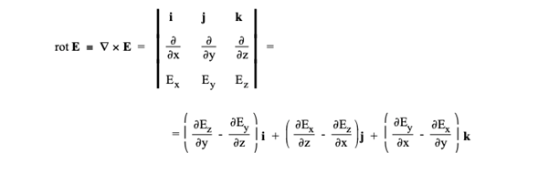
El rotacional es un vector y puede entenderse como el "producto vectorial" del operador nabla, ∇, por el campo vectorial E, en ese orden.
Cuando ∇ x E = 0 (rot E = 0), se dice que el campo vectorial E es irrotacional y esto nos permite decir que el campo E deriva de una función escalar V en la forma.
Sea V(x,y,z) un campo escalar definido y dos veces derivable en cada uno de los puntos de coordenadas (x,y,z) de una región del espacio. La laplaciana de V, representada por ∆V = ∇2V, viene dada, en coordenadas cartesianas, por la expresión:
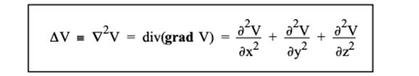
La laplaciana de una función escalar es un escalar.
Análogamente al "operador nabla", podemos definir el "operador laplaciano" mediante
Cuando el campo escalar V tiene derivadas segundas continuas y se cumple ∆V = 0, entonces se dice que el campo escalar V es un campo armónico.
La ecuación en derivadas parciales.
◈ A. Beléndez, J. B. (1998). Universidad de Alicante. Recuperado el 20 de 03 de 2025, de rua.ua.es: https://rua.ua.es/dspace/bitstream/10045/11355/3/Campos_esc_y_vect.pdf
◈ Plata, U. N. (s.f.). UNLP. Recuperado el 20 de 03 de 2025, de https://unlp.edu.ar/: https://www.mate.unlp.edu.ar/practicas/114_8_16062015111652.pdf
◈ Almeria, U. d. (s.f.). UAL. Recuperado el 20 de 03 de 2025, de ual.es: https://w3.ual.es/~plopez/docencia/ita/EVA_trasptema9
◈ Luz Juliana López López, R. E. (2023). Universidad de las Regiones Autómatas de la Costa Caribe Nicaraguense. Recuperado el 25 de 03 de 2025, de ceimm.uraccan.edu.ni: http://ceimm.uraccan.edu.ni/index.php/CEI-Interculturalidad/article/view/1176/4378
◈ Adrian, C. A. (2020). Facultad de Ciencias e Ingeniería, Universidad Estatal de Milagro, Ecuador. Recuperado el 21 de 03 de 2025, de unemi.edu.ec: https://d1wqtxts1xzle7.cloudfront.net/115056761/Ensayo_Calculo_DC.-libre.pdf?1716237976=&response-content-disposition=inline%3B+filename%3DEnsayo_Calculo_DC.pdf&Expires=1742431879&Signature=RuyTatjtGM415dmqHlZRkKk5v0P4x1EZRoGOXCoAMXCRZT38Ae37MLRcpQ4uReI7v